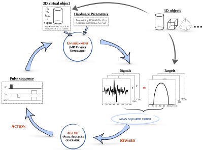
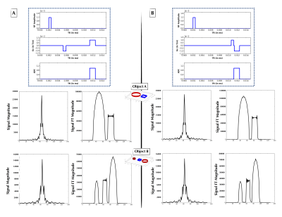
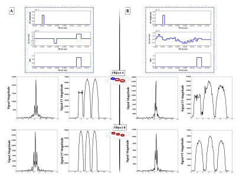
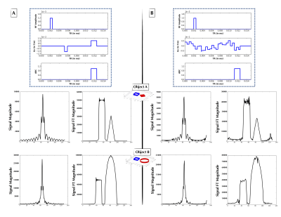

Although the macroscopic equations of motion for nuclear magnetic resonance have been described and modeled for decades by the Bloch equations, limited human intuition of their nonlinear dynamics is an obstacle to fully exploiting the vast parameter space of MR pulse sequences. Here we recast the general problem of pulse sequence development as a game of perfect information, and propose an approach to optimize game play with a Bayesian derivative of reinforcement learning within a MRI physics simulation environment. We demonstrate an AI agent learning a canonical pulse sequence (gradient echo) and generating non-intuitive pulse sequences approximating Fourier spatial encoding.
Although the macroscopic equations of motion for nuclear magnetic resonance have been described and modeled for decades by the Bloch equations, limited human intuition of their nonlinear dynamics, particularly over long periods of non-steady-state time evolution or in regimes such as off-resonance excitation, is an obstacle to fully exploiting the vast parameter space of MR pulse sequence control to optimize imaging protocols or develop novel contrast mechanisms.
Complex dynamics arising from series of behaviors governed by simple rules have also been a central subject of study in game theory1; great advances in understanding and computer control of games of perfect information such as Chess and Go have been made possible with reinforcement learning agents2,3 exploring these fully observable game environments with learned reward signals. Because the actions, environmental dynamics, and feedback of these perfect information games can be simulated, artificial systems can be developed to repeatedly play these games in silico to rapidly improve agents’ performance.
Here we recast the general problem of pulse sequence development as a game of perfect information, and propose an approach to optimize game play with a Bayesian derivative of reinforcement learning within a MRI physics simulation environment. In this work, we perform preliminary proof-of-principle 1-D experiments and demonstrate our agent learning a canonical pulse sequence (gradient echo) and also generating non-intuitive pulse sequences that can produce signals approximating Fourier spatial encoding.
Our reinforcement learning framework is composed of an artificial intelligence agent which generates pulse sequence actions that interact with its environment, the time-evolution of the imaging samples’ nuclear magnetization governed by the Bloch equations, which produces rewards based on reconstructed image error, that guide the update and refinement of the agent’s actions (Figure 1).
Our Bayesian approach to model this system is composed of pulse sequence actions that are generated from a distribution . In order to effectively capture the dynamic interplay between pulse sequences and their physical effect on the nuclear spin environment, we modeled using a dependent Gaussian process with sparseness-inducing priors4. The value function which maps the generated action to a predicted image score is modeled using a Bayesian neural network. In order to balance exploitation and exploration in a principled manner, the updated model posterior proposes the next set of pulse sequence actions by maximizing an acquisition function . In the current implementation, we chose to be the Expected Improvement (EI)5.
The MRI physics simulator developed here was inspired by an open-source GPU-based MRI simulation tool, MRILAB6. A MRI simulation wrapper was developed for Python and the simulation computational kernel was implemented entirely within the Python wrapper for Nvidia CUDA – Pycuda. The kernel was executed in parallel within the GPU environment since the Bloch equations can be solved independently for every voxel of the virtual objects7.
The inputs of the simulation kernel were 1) a set of 3D objects (e.g. cylinders, spheres, cubes…) with matrix = 132 × 132 × 30, resolution = 1 mm, T1 = 2100ms, T2 = 160ms, T2* = 140ms, 1 spin per voxel, and spin density, r = 1; 2) hardware specifications (the imaging static magnetic field gradients (Gx, Gy, Gz) and the transmitting RF field, B1) and 3) the MRI pulse sequence generated by the agent. The output of the simulation kernel was the signal with the real and imaginary components. For each iteration, each component of the signal was subtracted from a typical gradient-echo sequence-based signal, then squared and summed together to give the mean squared error, used as the scoring parameter.
We performed two 1-D experiments with different constraints upon the pulse sequence generator. For each experiment, a 90º hard RF pulse was set at the beginning of the pulse sequence.
The first experiment constrained the gradient Gx to be composed of two constant-amplitude blocks, each with any amplitude, start time and duration (blocks allowed to overlap). As seen in Figure 2, in this experiment the agent converged at low MSE upon “discovering” a form of the gradient echo.
The second experiment loosened the constraints upon Gx and modeled it using Haar wavelets with degree 5, with the wavelet weights generated by the distribution. The Haar wavelet model was chosen as a parsimonious parameterization of the pulse sequence. Figures 3 and 4 show two examples of non-intuitive agent-generated pulse sequences that approximate Fourier encoding.
Our future work includes the use of more sophisticated reward functions that optimize gradient smoothness, minimize total gradient moment, maximize signal per unit time, as well as including explicit functional forms for shaped RF pulses, and extension to 2- and 3-dimensional imaging.
[1] Nisan, Noam, et al., eds. Algorithmic game theory. Vol. 1. Cambridge: Cambridge University Press, 2007.
[2] Silver, David, et al. "Mastering the game of Go with deep neural networks and tree search." Nature 529.7587 (2016): 484-489.
[3] Kaelbling, Leslie Pack, Michael L. Littman, and Andrew W. Moore. "Reinforcement learning: A survey." Journal of artificial intelligence research 4 (1996): 237-285.
[4] Ren, Boyu, et al. "Bayesian nonparametric ordination for the analysis of microbial communities." Journal of the American Statistical Association just-accepted (2017).
[5] Shahriari, Bobak, et al. "Taking the human out of the loop: A review of bayesian optimization." Proceedings of the IEEE 104.1 (2016): 148-175.
[6] Liu, Fang, et al. "Fast Realistic MRI Simulations Based on Generalized Multi-Pool Exchange Tissue Model." IEEE transactions on medical imaging 36.2 (2017): 527-537.
[7] Xanthis, Christos G., et al. "MRISIMUL: a GPU-based parallel approach to MRI simulations." IEEE transactions on medical imaging 33.3 (2014): 607-617.


Figure 2: (A, Top) Explicitly coded gradient echo sequence, indicating RF, Gx, and readout window. (A, Middle) Phantom Object A simulated time-domain signal (left) from pulse sequence A, and its 1-D FT (right) forming a 1-D projection of Object A. (A, Bottom) As in Figure 2A-Middle, but for Object B. (B, Top) AUTOSEQ agent converged at low MSE upon “discovering” a form of the gradient echo. (B, Middle) Phantom Object B simulated time-domain signal (left) from pulse sequence B, and its 1-D FT (right) forming a 1-D projection of Object B. (B, Bottom) As in Figure 2B-Middle, but for Object B.

